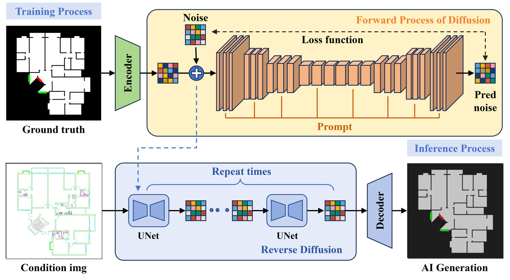
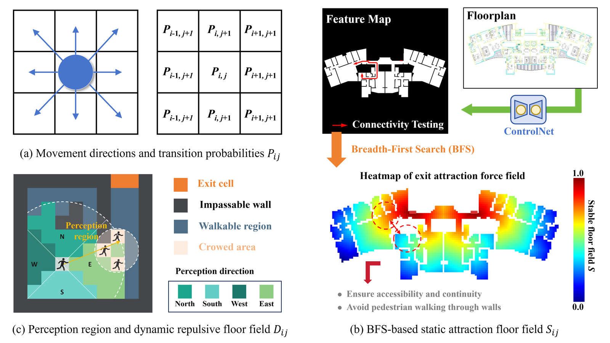
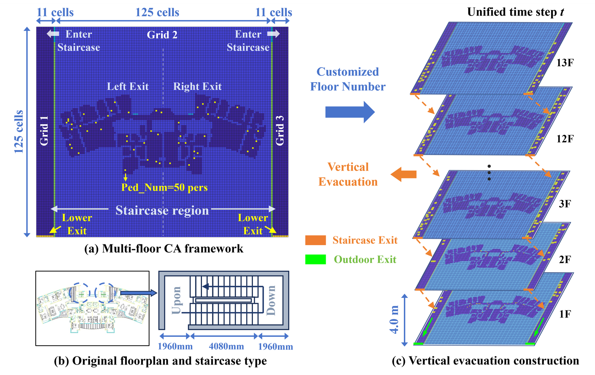
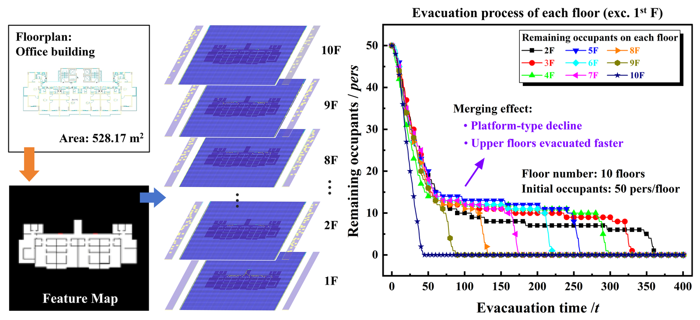
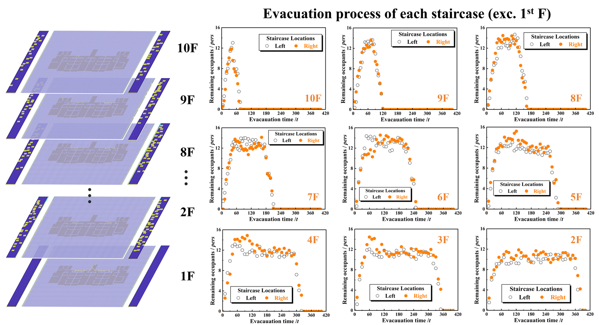

Research Center for Smart Urban Resilience and Firefighting, Department of Building Environment and Energy Engineering — The Hong Kong Polytechnic University
Vertical evacuation safety in high-rise buildings is a key challenge for urban resilience. This study proposes an automated evacuation modelling method for high-rise buildings that combines deep learning with an extended cellular automaton model, achieving rapid and reasonable evacuation modelling under customized multi-layer scenarios. A ControlNet converts building floor plans into semantic feature maps, and a multi-level cellular-automaton framework — including floor layouts and bilateral stairwells — allows customizing the number of floors and visualizing dynamic evacuation between staircases. Compared with validated models and real evacuation-drill data, the method reaches a higher semantic-segmentation accuracy (IoU = 0.906) and more accurate evacuation-time prediction (error < 9%), enabling "image-to-simulation" generation of high-rise scenarios within minutes while capturing the merging effect.
Dynamic evacuation process between staircases in a customized multi-level cellular-automaton scenario.

Framework construction of ControlNet model.

Principle and calculation of pedestrian movement and transition probabilities of the proposed FFCA.

Predefined framework for multi-floor building evacuation modelling using FFCA.

Modelling and the evacuation process versus time of each floor.

Evacuation process versus time of each staircase under different floors.